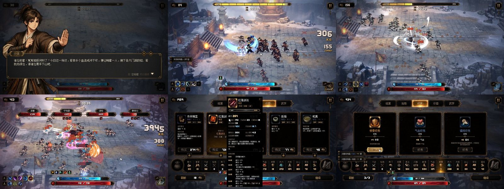
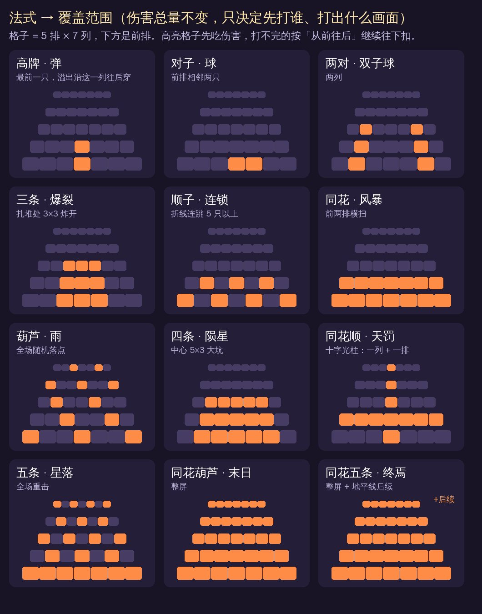
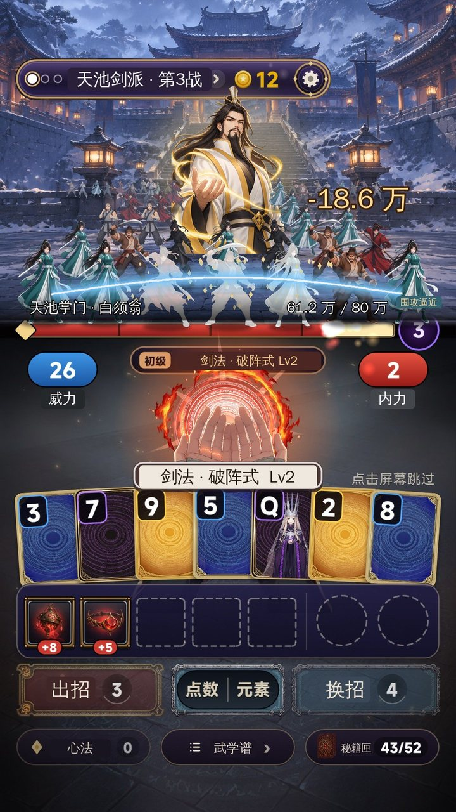
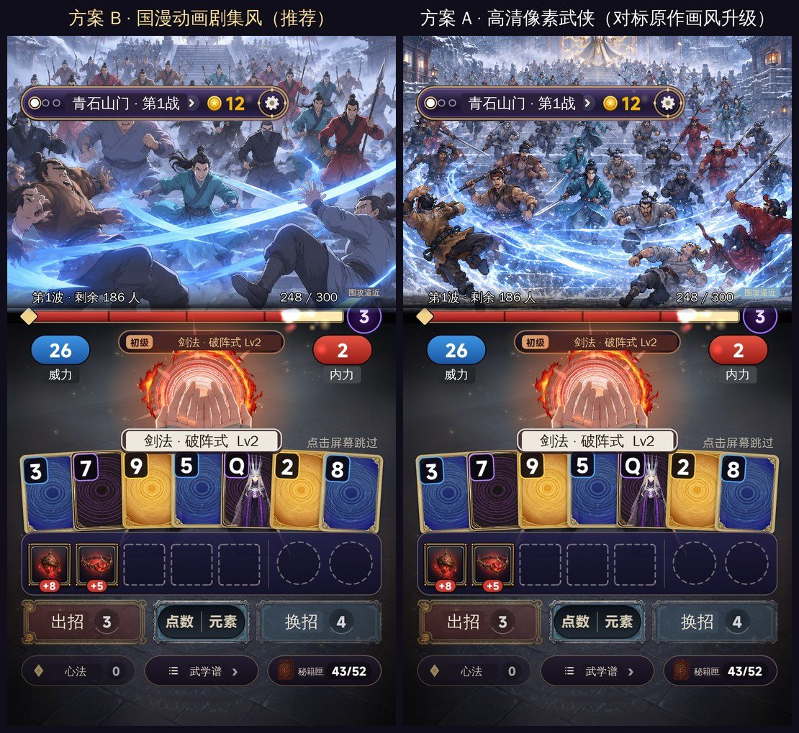
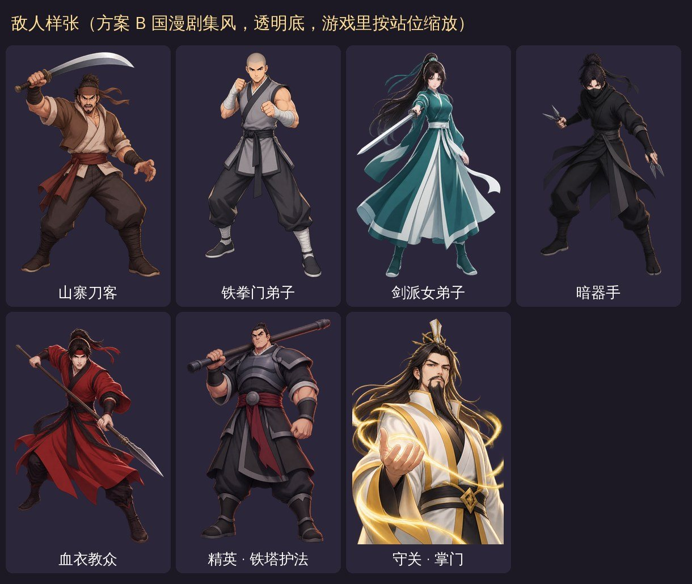
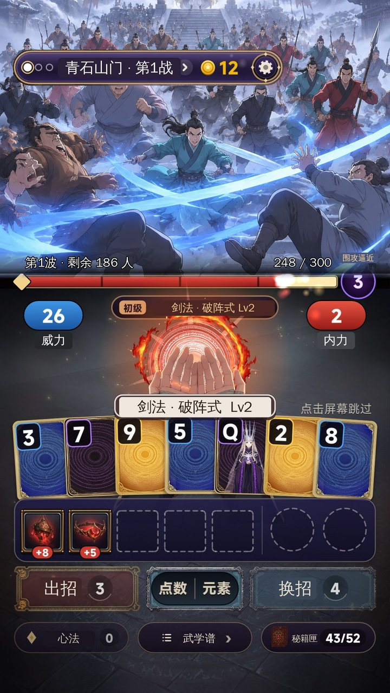

二代立项方案 v2：《武侠肉鸽：一手牌打退整个江湖》（工作名，待确认）
- 日期：2026-11-11（v2：题材改为复刻 TapTap 当前的割草爆款《群侠传：幸存者》，加上美术风格和战斗界面概念图）
- 底子：一代《手搓魔法：从小火球到灭世禁咒》（EmberCards，最新提交 17772c2）。一代仓库和线上应用都不动，二代在新仓库
zwluoqi/EmberCards2里做。 - 厂商：FIRE工作室（507397）
- 数据：TapTap 榜单 6 个（
research/v2/raw/charts/）、关键词 43 个（research/v2/keyword-table.md）、对标作品详情和最近 300 条评价（research/v2/raw/taptap/），均为 11-11 实抓；团队 135 款游戏的后台数据（steamdb-creater11-11 表） - 图：
docs/v2/img/。概念图的舞台和敌人是团队图片服务（gpt-image-2）生成的；血条以下是一代真实战斗截图，只把文字换成了武侠用词，牌面、掌心特效、装备图标还是一代的
0. 结论先说
- 复刻对象：《群侠传：幸存者》（TapTap 912144）。11-11 它同时是热门榜第 2、新品榜第 3，Roguelike、休闲、单机三个榜都是第 1，评分 9.3，6.5 万关注，每小时还在涨 1,000 多。它就是武侠题材的割草：一个人被八方门派围攻，满屏江湖人士冲上来。
- 复刻什么、升级什么：复刻它的题材和爽点（武侠、一人对抗整个江湖、满屏割草、击杀计数）。升级三件事：
- 玩法：换成一代验证过的卡牌构筑。一代这套牌局规则的次留是 22–27%，是团队最好的；而原作玩家骂得最多的是「太简单、后期无聊」。
- 性能：原作 52 条三星及以下的差评里，34 条在骂卡顿、卡死。二代是回合制出牌，同屏最多 35 人，不存在怪一多就卡。
- 画面：原作是像素风，二代推荐升级成国漫动画剧集风，同时竖屏单手玩。
- 单体变割草，规则引擎一行不改：一关的目标分 = 这一波敌人的总血量；每次出招的伤害还是一代算出来的那个数，只是分摊到满屏敌人身上。牌型决定先打谁、打成什么形状。
- 站位参考吸血鬼爬行者：第一人称，敌人排成 5 排、每排最多 7 人，同屏 35 人，后面的人在雾里排队补位，守关掌门站在最后一排正中。血条以下的界面全部不动。
- 要你定的：复刻对象、名字、画风二选一、玩法微调开哪几项，以及新建应用还是复用旧应用（第 14 节）。

1. 一代给二代留下了什么
| 看什么 | 数据 | 说明 |
|---|---|---|
| 留存（同一套规则） | 《命运牌：九重奏》1003219：次留 22.2%–27.4%，人均 83–110 分钟（11-07～11-11 三次取数；11-06 最早一次是 15.5% / 60 分钟，样本小） | 团队 135 款里最好；骑砍 15.5% / 52 分钟，鼠鼠出大红 11.1% / 35 分钟 |
| 吸量 | 同一款：首页点击率 7.8%–8.5%，10-12～11-10 新增只有 157 | 团队吸量好的都在 16%–25%（末日兵工厂 24.9%、收纳师 22.8%、骑砍 17.9%） |
| 一代《手搓魔法》1026165 | 只开了预约，广告没开通，没有留存数据 | 西幻魔法题材；负责人 11-06 说过「西幻美术在 TapTap 不吸量」 |
| 能直接搬的 | 规则引擎（742 个测试）、12 系 × 4 阶施法特效、12 个禁咒全屏演出、第一人称掌心施法、击杀分级、局外成长（唤醒 / 强化）、名词层 words.lua、录屏 / 截图工具链 | 占一代工作量的大头 |
结论：核心循环不动，力气全花在「题材 + 战斗画面」上，正好对准一代的短板（吸量）。
2. 复刻对象：为什么是《群侠传：幸存者》
2.1 它现在有多火（11-11 实抓）
| 看什么 | 数据 |
|---|---|
| 榜单 | 热门榜第 2（第 1 是星穹铁道）、新品榜第 3、Roguelike 榜第 1、休闲榜第 1、单机榜第 1 |
| 口碑 | 9.3 分（最新版本 9.4），482 条评价，5 星 300 条 |
| 规模 | 关注 64,999，下载 67,202，预约过 4,918 |
| 势头 | 13:31 → 13:34（UTC）关注 64,917 → 64,999，每小时约 1,000–1,500；团队 11-04 以前的榜单快照里还没有它，是刚上线就冲上来的 |
| 是什么 | 武侠题材的幸存者类动作肉鸽：20 波江湖围攻，153 门武学、247 件道具，8 方势力 55 种敌人；PC 移植（Steam 已上线），横屏，高清像素画风，过场是 AI 画的人物 CG |

2.2 题材的需求（TapTap 搜索前 40 合计关注 / 标题里有几款）
| 词 | 合计关注 | 标题含词 | 说明 |
|---|---|---|---|
| 武侠 | 4,467 万 | 4 款 | 需求很大，标题里几乎没人用这个词 |
| 武侠肉鸽 | 2,128 万 | 0 款 | 联想有「肉鸽武林」 |
| 江湖 | 1,732 万 | 39 款 | 太挤，不进标题 |
| 武侠割草 | 1,260 万 | 1 款 | |
| 群侠 | 129 万 | 39 款 | 联想第 2 个就是「群侠传幸存者」，说明玩家在搜它；但「群侠」是金庸群侠传一系的老词，不进我们的标题 |
2.3 玩家骂它什么（最近 300 条评价，三星及以下 52 条）
| 骂点 | 条数 | 二代怎么解决 |
|---|---|---|
| 卡顿、卡死、白屏（「怪物一多卡的一B」「一换武学就卡死」） | 34 | 回合制出牌，同屏最多 35 人，敌人是单张立绘 + 程序动画；没有实时弹幕和碰撞 |
| 太简单、后期无聊、内容少（「玩了两把就通关」「太容易成型」） | 约 9 | 一代的 8 段难度 + 上百件装备构筑，规则引擎原样搬来；一代留存是团队最好的 |
| 看不清打到谁（「完全不知道挥出去的这一下能打到谁」） | 2 | 牌型 = 覆盖范围，出招前就知道打哪一片（4.2 节） |
| 对话不能跳、短剧尬 | 3 | 剧情减量，全部可跳 |
| 商店 / 掉落看脸 | 2 | 一代商店规则照旧（刷新、绕过、奖励券） |
另外原作是横屏的 PC 移植，二代竖屏单手。
2.4 备选
| A. 武侠：复刻《群侠传：幸存者》（推荐） | B. 末日：复刻《我在末日当房东》一路 | |
|---|---|---|
| 对标作品 | 群侠传：幸存者 912144，6.5 万关注，5 个榜同时在前 3 | 我在末日当房东 718452（118 万）、末世：我有一辆房车 817986（57 万），都在 Roguelike 榜前 30，但都是老游戏，不是现在正在冲的 |
| 题材需求 | 武侠 4,467 万；武侠肉鸽 2,128 万（标题 0 款） | 末日 3,121 万；末日异能 2,153 万（标题 0 款） |
| 团队数据 | 团队没有武侠割草；《武侠搜打撤》是同题材不同玩法 | 末日兵工厂首页点击率 24.9%（团队最高） |
| 和牌的契合 | 武学残页 = 牌，四门外功 = 四种花色 | 异能卡，四系异能 = 四种花色 |
v1 推荐的「末日异能」降为备选 B：它的数据也好，但没有一款正在冲榜的对标作品可以照着复刻。v1 里的东方志怪不再列。
2.5 名字
| 名字 | 理由 | |
|---|---|---|
| ① 推荐 | 武侠肉鸽：一手牌打退整个江湖 | 品类大词打头（武侠肉鸽 2,128 万 / 标题 0 款，负责人 11-06 的规则：玩法品类游戏用「题材词 + 品类大词」）；副标题讲清「牌」和「一人对整个江湖」 |
| ② | 一人破阵：一手牌打退八方门派 | 更像武侠小说；但「一人破阵」没人搜 |
| ③ | 武侠割草：一副牌杀穿江湖 | 品类词「割草」直接进标题（武侠割草 1,260 万 / 标题 1 款） |
不用「群侠」：既是金庸群侠传的老词，也和对标作品同名，会被当成蹭名字。止损名（标题被判「套用」时换）：《江湖一副牌》（还没查重，定名时一起查）。
3. 题材映射：只换名字和画面
| 一代《手搓魔法》 | 二代《武侠肉鸽》 | 规则 |
|---|---|---|
| 元素牌（52 张，四种颜色） | 武学残页，四门外功：刀 / 剑 / 拳 / 暗器 | 点数、花色不变 |
| 牌型 → 12 系魔法 | 牌型 → 12 路招式（单式、连击、双手互搏、三连斩、连环、剑阵、暴雨、崩山、天罚一剑……） | 不变；一代的法式「弹 / 球 / 爆裂 / 连锁 / 风暴 / 雨 / 陨星 / 天罚」本来就是范围攻击，换成刀光、剑气、拳劲、暗器雨 |
| 魔攻 × 增幅 = 伤害 | 威力 × 内力 = 伤害 | 不变 |
| 敌人生命 | 这一波围攻的总血量 | 不变（数值就是一代的目标分） |
| 8 关 × 3 战（普通 / 精英 / 守关者） | 8 个门派山门 × 3 波（门人围攻 / 精英护法 / 掌门） | 不变 |
| 施放 / 替换 | 出招 / 换招；剩余出招次数 = 围攻还有几步到你面前 | 不变，见 4.4 |
| 装备（小丑牌） | 兵器 / 心法 / 奇物 | 效果不变，改名换图标（图标可以第二批再换） |
| 道具 / 升级包 / 魔导天赋 | 丹药 / 武学精进 / 门派心法 | 不变 |
| 魔力结晶 / 唤醒 / 强化 | 江湖声望 / 参悟 / 修炼 | 声望按击杀数给，见第 8 节 T1 |
| 失败：敌人放致命魔法 | 失败：八方围上来 / 掌门出手 | 只换演出 |
| 十二系禁咒 | 十二路绝学全屏演出（清屏） | 演出照用，换贴图和名字 |
8 个山门（全部架空，不用真实门派、寺庙和地名）：青石山门（山寨刀客）→ 铁拳门 → 天池剑派 → 暗器世家 → 血衣教 → 铁塔堡 → 武林盟 → 天下第一宗师。
主角动机（一句话）：少侠被栽赃灭门血案，八方门派上门围攻；一人一副残页，打到真凶面前。
4. 从打一个 Boss 变成割草：规则一行不改
4.1 一句话
这一波敌人的血量加起来，正好等于一代这一关的目标分。 每次出招的伤害还是一代规则引擎算出来的同一个数，表现层只决定伤害落在哪些人身上、倒下几个。scripts/game/ 不改，种子复现、bot 模拟、742 个测试照旧有效。
4.2 伤害怎么分到敌人身上
- 出招后先按牌型（招式）挑出「先挨打」的一组敌人（下图高亮的格子）。
- 伤害按顺序扣血：先扣这一组，打不完的按「从前排往后排、每排从中间往两边」继续扣，直到伤害用完。
- 所以击杀数只由伤害大小决定，牌型只决定先倒的是谁、画面是什么形状：单式是一道剑气穿透一列，同花（剑阵）是前两排横扫，四条（崩山）是中间砸一个大坑，同花葫芦以上整屏清掉。
- 守关战里掌门算一个「大血包」：只有带穿透的招式（四条、同花顺、五条及以上）会把掌门放进先挨打的那组，别的招式要先杀穿前面的门人才轮到他。

4.3 边算分边倒人：割草的节奏感从这里来
一代是计分动画全部走完再一次性砸下去。二代在计分过程中就开始倒人：规则引擎一瞬间就算出最终伤害，表现层按计分过程里「威力 × 内力」的实时乘积，把最终伤害分段放出去。
- 每亮一张残页，前排倒一两个；
- 兵器 / 心法触发、内力翻倍的那一下，后排成片倒下；
- 最后招式落下，收掉剩下的人头，弹出「斩 ×37」。
数字越往上翻，人倒得越快，就是对标作品「K.O. 计数一路往上跳」的爽感。总伤害一分不差，只是放出来的时机变了。
4.4 剩余出招次数 = 围攻还有几步
一代血条右边的「致命魔法 3」改成「围攻逼近 3」。每出一次招，没倒的人整体往前压一排、放大一点；最后一次出招还没清完，八方围上来（守关战是掌门出手），也就是一代的失败。规则没变，但「还剩几次」从一个数字变成了眼前越来越近的压迫感。
4.5 三种波次（数量是起始值，切片阶段用 bot 调）
| 波次 | 组成 | 总人数（第 a 个山门） | 第 1 个 | 第 8 个 |
|---|---|---|---|---|
| 第 1 波：门人围攻 | 这个门派的 3 种门人混编 | 30 × 1.3^(a−1) | 30 | 188 |
| 第 2 波：精英护法 | 门人 + 约 15% 精英（3 倍血、大一号、红色轮廓光） | 40 × 1.3^(a−1) | 40 | 251 |
| 第 3 波：掌门 | 门人占 70% 血量 + 掌门占 30% | 60 × 1.3^(a−1) + 掌门 | 60 + 1 | 376 + 1 |
- 一局打通大约要打倒 3,000 人，可以写进简介和成就（「一人打退十万江湖客」）。
- 一代 bot 模拟（
research/sim-out-v3.txt）：每关里最好的一手牌，伤害中位数是目标分的 0.53–1.15 倍。换算过来，打得好的一手牌会一次清掉半屏到整波，普通一手大约清掉两三成。前期一手倒几个，后期一手清屏，这条成长曲线是一代数值自带的。 - 单个敌人的血量 = 这一波的血量 ÷ 人数，玩家看不到单人血量，只看血条和「剩余 ×N」，避免数字刷屏。
4.6 绝学 = 清屏
一代 12 个禁咒全屏演出照用：放完整屏人倒下，地平线外的后续也一起清掉，「剩余」直接归零。这是商店截图和宣传片最好用的镜头。
5. 敌人站位
5.1 吸血鬼爬行者怎么摆（团队 10-26 的拆包整理：steamdb-creater/data/2026/2026-10-26/analysis/TimidKnight-VC玩法数值拆解.md、ComboSquad-VC战斗拆解.md）
- 第一人称格子地牢，敌人站在你面前，按「排」站：每排最多 7 个（拆包
rowWidth = 7），最多 5 排缓冲（rowBufferCount = 5）。 - 很多武器只打「前排」或「每列最前面那个」；击退会把敌人推回后排，这一回合它就不出手。
- Boss 遭遇的编队基本是「15 个同主题小怪 + 1 个精英」。
- 画面是低清像素贴片，近大远小，没有景深和光影。
5.2 二代的站位规格（竖屏 1080 × 1920 参考尺寸）
一代血条（上下分界线）在 y ≈ 772。前排脚底就踩在血条上，血条以上整块舞台归敌人，以下一像素不动。
| 排 | 脚底 y | 人物高（px） | 横向间距 | 最多几人 | 说明 |
|---|---|---|---|---|---|
| 第 1 排（最近） | 766 | 200 | 146 | 7 | 被打时抖动最明显；围攻逼近时整体放大 |
| 第 2 排 | 680 | 160 | 118 | 7 | |
| 第 3 排 | 606 | 126 | 94 | 7 | 精英常站这里（看得清，又不挡前排） |
| 第 4 排 | 546 | 100 | 76 | 7 | |
| 第 5 排 | 498 | 78 | 60 | 7 | |
| 地平线 | ≈ 466 | 42 | — | 不限 | 雾里的小人，右上角显示「剩余 ×N」 |
（人物高度是概念图里实际用的值：立绘比剪影瘦，按格子放大了 1.35 倍。）
- 所有排沿透视收窄；前排遮后排，同一排按 x 交错 ±6 px，看起来不像阅兵。远处的人加一层发蓝的雾（空气透视），越远越淡。
- 同屏上限 35 人：前面倒一个，后面往前补一格，地平线再走出一个。一次清掉超过 35 人时，补位一波接一波涌上来再倒下，大约 1.2 秒放完。
- 精英：红色轮廓光、大一号、3 倍血，优先站第 2～3 排中间。
- 掌门：站最后一排正中，半身立绘比整群都高，身后一圈金色内力光；后三排中间三格让出来。前排杀穿后掌门往前一步。
- 头顶留余量：掌门头顶不碰顶栏胶囊（一代反复改过的问题：头不能顶到 UI）。
- 伤害数字：只弹一个大数（一代那个）+ 一个「斩 ×N」计数，倒下的人闪白、碎成光点，不让数字盖住人群。
| 普通波（一招剑阵扫倒前排 5 人） | 掌门波 |
|---|---|
|
 |
5.3 和吸血鬼爬行者、群侠传不一样的地方
| 吸血鬼爬行者 | 群侠传：幸存者 | 二代 | |
|---|---|---|---|
| 视角 | 第一人称 | 俯视斜角，满地图跑 | 第一人称，人群从正前方压过来 |
| 画面 | 像素贴片、平光 | 高清像素 | 国漫剧集风立绘、景深雾、轮廓光、地面投影 |
| 动作 | 两三帧原地晃 | 逐帧像素动画 | 呼吸、摇晃、往前蹭步（程序动画，一代已有现成代码）、受击闪白、倒下碎成光点 |
| 打到谁 | 看卡面文字 | 看不清（玩家差评） | 招式形状直接画在人群上，出招前就知道范围 |
| 卡不卡 | 不卡 | 怪多就卡（34 条差评） | 同屏上限 35，不卡 |
| 规模 | 一场十几个 | 一局几千 | 一波 30～376 人，一局约 3,000 人 |
6. 美术风格
6.1 两个方案（按负责人的规矩，风格化和主流各给一个）

| 方案 B：国漫动画剧集风（推荐） | 方案 A：高清像素武侠 | |
|---|---|---|
| 思路 | 把对标作品的像素风升级成高清手绘：粗线条、两层赛璐璐阴影、强轮廓光、电影感打光 | 照对标作品的像素风往上提一档（HD-2D：像素人物 + 体积光、景深、飘雪） |
| 好处 | 和对标作品一眼能区分开；团队《魔女搜打撤》（动画剧集风）留存 12.4%；小尺寸下剪影清楚 | 喜欢原作的玩家最熟悉 |
| 风险 | 人物多了要控制衣服纹理（已在提示词里加了「干净衣服」约束，样张没有噪点） | 容易被看成换皮；gpt-image-2 出的「像素」其实偏厚涂，要真像素得换管线 |
| 管线 | gpt-image-2（样张就是它出的）；人物也可以换 NovelAI V5 试 | gpt-image-2 / 像素专门管线 |
一代的西幻厚涂不再用（负责人：西幻在 TapTap 不吸量）；赛博霓虹也不做。
6.2 敌人样张（方案 B）

- 每种敌人一张透明底全身站姿立绘，正对玩家（第一人称），不做逐帧动画，动作全靠程序（呼吸、摇晃、蹭步、受击、倒下）。
- 每个门派 3 种门人 + 1 种精英护法 + 1 位掌门：8 个山门共 24 + 8 + 8 = 40 张。上面 7 张是第一批样张，同一套提示词常量（画风前缀 + 干净衣服约束）。
- 女性敌人一律高领长衣；不出血，倒下是闪白碎成光点。
6.3 战斗场景

- 每个山门一张第一人称纵深背景（石阶、山门、灯笼、雪），地平线在 y 270 左右，前景地面留空给人群站。
- 上图是整幅「人群冲锋」的 AI 场景直接放进界面，用来看氛围；游戏里实际是「空场背景 + 按站位摆的立绘」（5.2 节两张图），这样才能一个一个打倒。
6.4 要出的图
| 项 | 数量 | 说明 |
|---|---|---|
| 门人 / 精英 / 掌门 | 24 / 8 / 8 | 透明底；掌门是半身，沿用一代守关者的取景表（眼线 / 头顶） |
| 山门背景 | 8 | 第一人称纵深 |
| 武学残页牌面 | 4 门 + 人像牌 12 | 替换一代元素牌（概念图里还是一代的牌） |
| 掌心特效 | 4 门 | 一代的掌心法阵换成刀光、剑气、拳劲、暗器（概念图里还是一代的火） |
| 兵器 / 心法图标 | 234 | 第二批：先改名，图标后换 |
| 商店素材 | 图标、宣传图、截图、实机录屏 | 切片过了再做 |
7. 战斗界面
不动：顶栏胶囊、血条位置、两颗数字的位置、法阵和掌心的位置、手牌、装备栏、出招 / 排序 / 换招按钮、底栏三个入口、商店、营地布局。
要动的只有（上面几张概念图都已经这样画了）：
- 血条以上的舞台：一张敌人立绘换成人群（第 5 节）；
- 血条左边写「第 N 波 · 剩余 X 人」，掌门波写掌门名字；
- 右边「致命魔法」徽章换成「围攻逼近」；
- 右上角加「剩余 ×N」；
- 全局用词过名词层 words.lua 换成武侠用词：魔攻 → 威力、增幅 → 内力、施放 → 出招、替换 → 换招、魔法书 → 武学谱、元素库 → 秘籍匣、魔导天赋 → 心法（一代换皮时做过一次，492 句 + 106 条规则）。
8. 玩法微调（都可以单独开关）
| # | 改什么 | 动不动规则 | 建议 |
|---|---|---|---|
| T1 | 江湖声望按击杀数给：每倒 10 人 +1（代替一代「每赢一战 +10 结晶」） | 只改局外经济，局内规则不动 | 开。击杀数天然跟着山门涨，「多杀多得」直接接上割草的爽点；修炼费用曲线要跟着重新算 |
| T2 | 伤害按牌型分到人群上、边算分边倒人（4.2、4.3） | 不动，纯表现 | 开，这就是割草的核心 |
| T3 | 剩余出招次数显示成围攻逼近（4.4） | 不动，纯表现 | 开 |
| T4 | 超杀奖励：最后一招的伤害超过剩余血量 2 倍，额外 +1 金币（每关最多 +2） | 动经济，要跑 bot 看通关率 | 先关，切片里做成开关试 |
| T5 | 出招默认快一点：倒人动画和计分动画叠着放，单次出招从约 7.5 秒压到约 5 秒 | 不动，只改节奏 | 开；割草要节奏，一代时负责人只同意过「加快一点点」，所以要你确认 |
规则不动的项照一代「表现层不碰规则」的做法做：不读写 run.rng，有同种子回放一致性测试兜底。
9. 复用和新做
| 模块 | 复用 | 新做 / 改 |
|---|---|---|
规则引擎 scripts/game/ |
全部 | 0 |
| 施法特效 castfx / ultfx / 禁咒 | 框架和时序 | 换成刀光、剑气、拳劲、暗器的贴图；每个招式加「落点」：打到哪几个人 |
| 战斗舞台 magicboard | 血条、法阵、数字 | 新模块 ui/horde.lua：站位、补位、伤害分配、倒下、逼近（估计 1,000 行左右） |
| 失败演出 foespell | 框架 | 8 种「八方围上来」 |
| 名词层 words.lua | 机制 | 全部用词换成武侠 |
| 局外成长 | 规则 | 声望来源（T1）、费用重算 |
| 剧情 | 结构（开场 CG、断章、营地角色） | 文本全部重写；建议减量：开场 + 每个掌门一段 + 结局，全部可跳 |
| 配音 | ElevenLabs 管线 | 招式名 48 个、掌门台词、营地角色 |
10. 里程碑
| 阶段 | 内容 | 过关标准 |
|---|---|---|
| 切片 | 第 1 个山门三波打通：人群站位、伤害分配、边算分边倒人、逼近、清屏；用定下来的画风出第 1 个山门的 3 种门人 + 精英 + 掌门 + 背景 | 你扫码试玩认可「割草爽感」；真机帧率稳定；同种子回放测试通过 |
| 正式制作 | 8 个山门美术、文字换皮、局外声望、配音 | 全流程能打通；bot 通关率和一代持平（±2%） |
| 预约 | 商店素材（第 0 帧就是清屏镜头）、提审 | 走一代的提审清单；广告开通后再定时上线 |
11. 目标
| 指标 | 一代（命运牌） | 二代目标 |
|---|---|---|
| 首页点击率 | 8% 左右 | ≥ 15%（团队吸量好的那一档） |
| 次留 | 22%–27% | ≥ 20%（核心没动，允许小幅下降） |
| 人均时长 | 83–110 分钟 | ≥ 60 分钟 |
12. 风险
- 团队题材撞车：团队已有《武侠搜打撤》（WuxiaLoot，11-06，武侠 × 搜打撤）。按 10-22 的规则撞品类不算否决理由，但负责人 11-09 否过一次「同世界观」的立项。二代是第一人称卡牌割草，玩法完全不同；如果你觉得还是撞，就换备选 B（末日）。
- 被看成蹭对标作品：名字不用「群侠」，门派、人物、剧情全部原创；画风推荐和原作拉开（国漫剧集风 vs 像素）。
- 审核：武侠不是历史朝代题材，不写真实朝代、帝王和真实门派寺庙；打斗不出血。
- 对标作品的热度能撑多久：它刚上线几天，热度可能回落；但「武侠」4,467 万、「武侠肉鸽」2,128 万的需求是长期的，不靠它一款。
- 割草爽感要真机验证：35 人同屏 + 粒子在低端机上的帧率还没测，切片第一件事就是看这个。
- T1 改声望来源：局外节奏要重新算（一代的成长节奏本来就只有文档测算，没有实测）。
13. 附：v1 的末日方案
v1 推荐的「末日异能」（末日 3,121 万、末日异能 2,153 万标题 0 款、团队末日兵工厂首页点击率 24.9%）保留为备选 B。v1 的站位示意图（占位剪影）仍在 img/mock_wave.jpg、img/mock_boss.jpg。
14. 要你定
- 复刻对象：A 武侠，复刻《群侠传：幸存者》（推荐）/ B 末日？
- 名字：①《武侠肉鸽：一手牌打退整个江湖》/ ② / ③？
- 画风：B 国漫动画剧集风（推荐）/ A 高清像素武侠？定了以后按第 1 个山门把整套敌人和背景出齐，做进切片。
- 玩法微调：T1～T5 哪几项开？（建议开 T1、T2、T3、T5，T4 先关）
- 应用：在 FIRE工作室下新建应用（要查本周新游戏额度），还是拿一款数据差的旧应用换成二代（负责人 11-08 的做法，不占额度）？